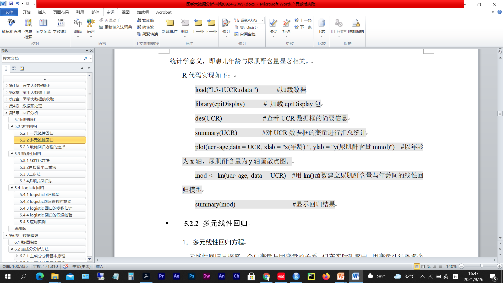
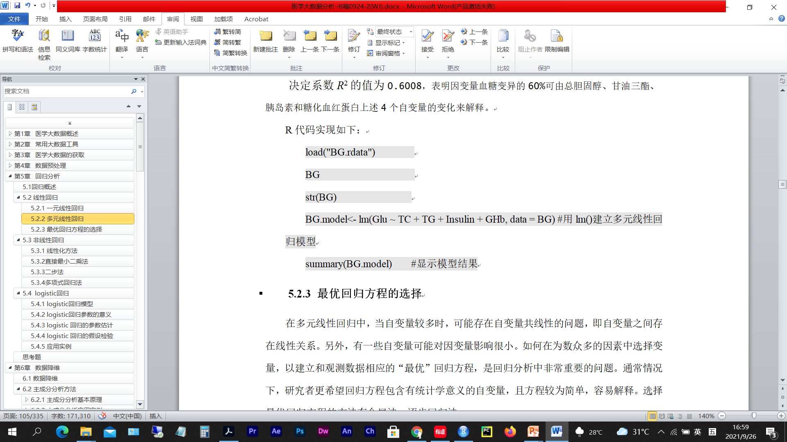
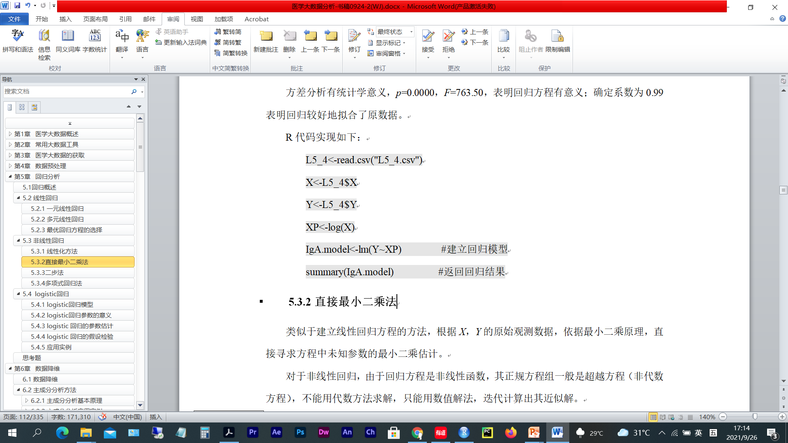
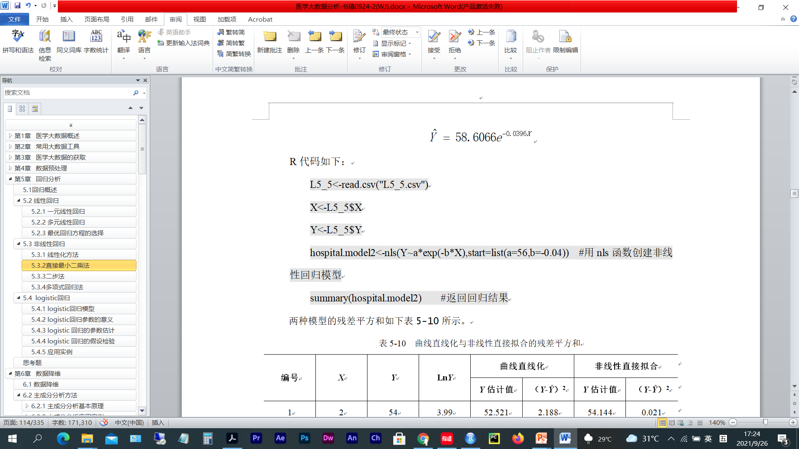
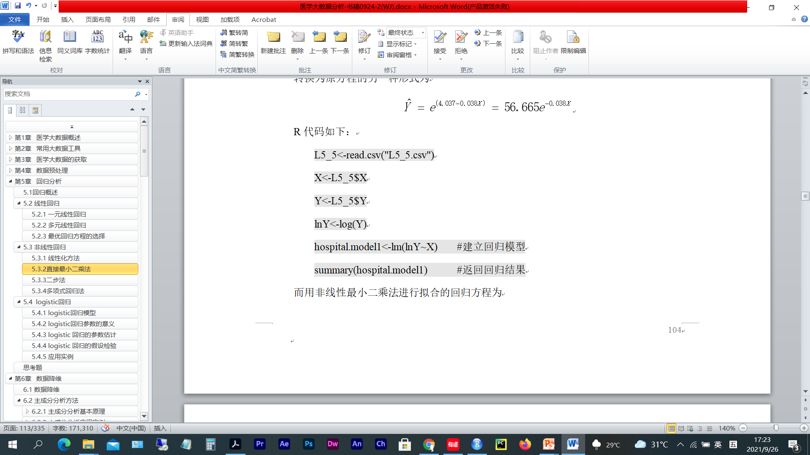
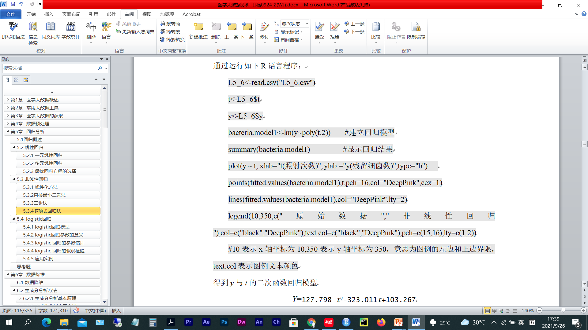
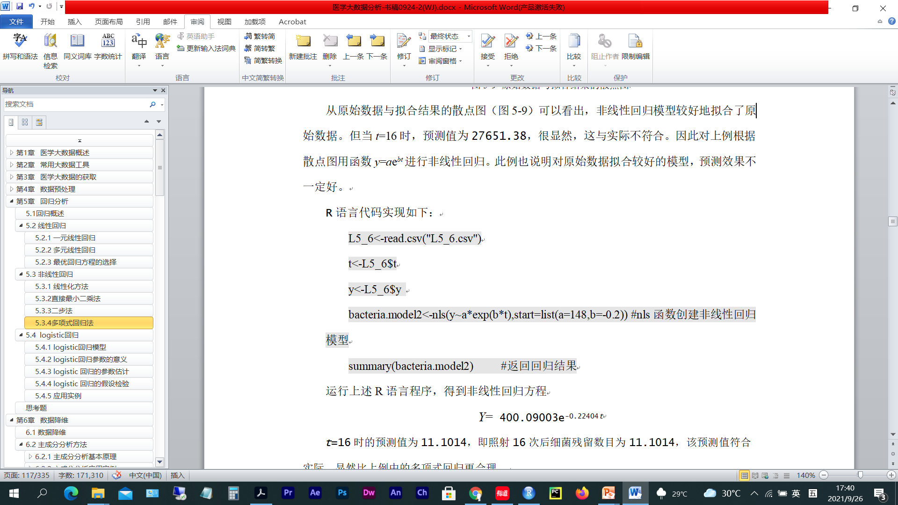
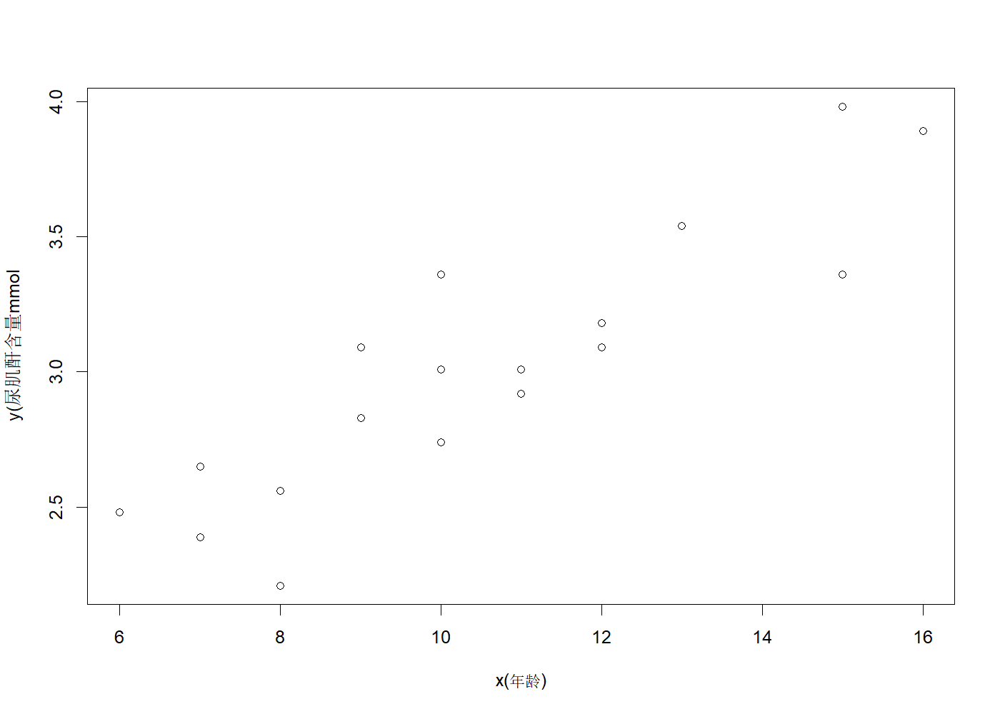
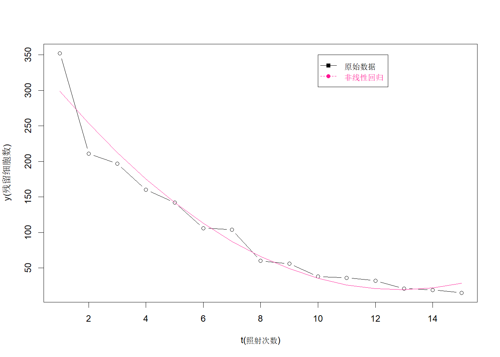
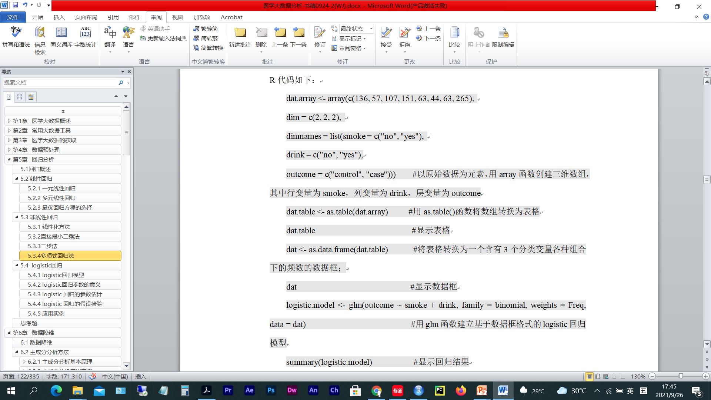

> 本文件由 `大数据实验3.pptx` 整理而成；
> 课件本身（.pptx）未收录进本仓库；文中的图片是幻灯片里原有的公式与数据表。

load('L5-1UCR.rdata')
library(epiDisplay)
des(UCR)
summary(UCR)
plot(ucr~age,data = UCR,xlab = 'x(年龄)',ylab = 'y(尿肌酐含量mmol')
mod = lm(ucr~age,data = UCR)
summary(mod)
UCR in Kaschin-Beck disease children
No. of observations = 18
Variable Class Description
1 age integer Age in years
2 ucr numeric Urine creatinine (mmol)
3 group factor Type of children
age ucr group
Min. : 6.00 Min. :2.210 0: 8
1st Qu.: 8.25 1st Qu.:2.673 1:10
Median :10.00 Median :3.010
Mean :10.50 Mean :3.016
3rd Qu.:12.00 3rd Qu.:3.315
Max. :16.00 Max. :3.980
Call:
lm(formula = ucr ~ age, data = UCR)
Residuals:
Min 1Q Median 3Q Max
-0.43440 -0.13828 -0.01111 0.14738 0.41823
Coefficients:
Estimate Std. Error t value Pr(>|t|)
(Intercept) 1.45492 0.20712 7.025 2.87e-06 ***
age 0.14869 0.01904 7.807 7.60e-07 ***
---
Signif. codes: 0 '***' 0.001 '**' 0.01 '*' 0.05 '.' 0.1 ' ' 1
Residual standard error: 0.2289 on 16 degrees of freedom
Multiple R-squared: 0.7921, Adjusted R-squared: 0.7791
F-statistic: 60.95 on 1 and 16 DF, p-value: 7.597e-07

load('BG.rdata')
BG
str(BG)
BG.model = lm(Glu~TC +TC+TG+Insulin+GHb,data = BG)
summary(BG.model)
TC TG Insulin GHb Glu
1 5.68 1.90 4.53 8.2 11.2
2 3.79 1.64 7.32 6.9 8.8
3 6.02 3.56 6.95 10.8 12.3
4 4.85 1.07 5.88 8.3 11.6
5 4.60 2.32 4.05 7.5 13.4
6 6.05 0.64 1.42 13.6 18.3
7 4.90 8.50 12.60 8.5 11.1
8 7.08 3.00 6.75 11.5 12.1
9 3.85 2.11 16.28 7.9 9.6
10 4.65 0.63 6.59 7.1 8.4
11 4.59 1.97 3.61 8.7 9.3
12 4.29 1.97 6.61 7.8 10.6
13 7.97 1.93 7.57 9.9 8.4
14 6.19 1.18 1.42 6.9 9.6
15 6.13 2.06 10.35 10.5 10.9
16 5.71 1.78 8.53 8.0 10.1
17 6.40 2.40 4.53 10.3 14.8
18 6.06 3.67 12.79 7.1 9.1
19 5.09 1.03 2.53 8.9 10.8
20 6.13 1.71 5.28 9.9 10.2
21 5.78 3.36 2.96 8.0 13.6
22 5.43 1.13 4.31 11.3 14.9
23 6.50 6.21 3.47 12.3 16.0
24 7.98 7.92 3.37 9.8 13.2
25 11.54 10.89 1.20 10.5 20.0
26 5.84 0.92 8.61 6.4 13.3
27 3.84 1.20 6.45 9.6 10.4
'data.frame': 27 obs. of 5 variables:
$ TC : num 5.68 3.79 6.02 4.85 4.6 6.05 4.9 7.08 3.85 4.65 ...
$ TG : num 1.9 1.64 3.56 1.07 2.32 0.64 8.5 3 2.11 0.63 ...
$ Insulin: num 4.53 7.32 6.95 5.88 4.05 ...
$ GHb : num 8.2 6.9 10.8 8.3 7.5 13.6 8.5 11.5 7.9 7.1 ...
$ Glu : num 11.2 8.8 12.3 11.6 13.4 18.3 11.1 12.1 9.6 8.4 ...
Call:
lm(formula = Glu ~ TC + TC + TG + Insulin + GHb, data = BG)
Residuals:
Min 1Q Median 3Q Max
-3.6268 -1.2004 -0.2276 1.5389 4.4467
Coefficients:
Estimate Std. Error t value Pr(>|t|)
(Intercept) 5.9433 2.8286 2.101 0.0473 *
TC 0.1424 0.3657 0.390 0.7006
TG 0.3515 0.2042 1.721 0.0993 .
Insulin -0.2706 0.1214 -2.229 0.0363 *
GHb 0.6382 0.2433 2.623 0.0155 *
---
Signif. codes: 0 '***' 0.001 '**' 0.01 '*' 0.05 '.' 0.1 ' ' 1
Residual standard error: 2.01 on 22 degrees of freedom
Multiple R-squared: 0.6008, Adjusted R-squared: 0.5282
F-statistic: 8.278 on 4 and 22 DF, p-value: 0.0003121
load('BG.rdata')
BG
str(BG)
BG.model = lm(Glu~TC +TC+TG+Insulin+GHb,data = BG)
summary(BG.model)
drop1(BG.model)
step(BG.model)
TC TG Insulin GHb Glu
1 5.68 1.90 4.53 8.2 11.2
2 3.79 1.64 7.32 6.9 8.8
3 6.02 3.56 6.95 10.8 12.3
4 4.85 1.07 5.88 8.3 11.6
5 4.60 2.32 4.05 7.5 13.4
6 6.05 0.64 1.42 13.6 18.3
7 4.90 8.50 12.60 8.5 11.1
8 7.08 3.00 6.75 11.5 12.1
9 3.85 2.11 16.28 7.9 9.6
10 4.65 0.63 6.59 7.1 8.4
11 4.59 1.97 3.61 8.7 9.3
12 4.29 1.97 6.61 7.8 10.6
13 7.97 1.93 7.57 9.9 8.4
14 6.19 1.18 1.42 6.9 9.6
15 6.13 2.06 10.35 10.5 10.9
16 5.71 1.78 8.53 8.0 10.1
17 6.40 2.40 4.53 10.3 14.8
18 6.06 3.67 12.79 7.1 9.1
19 5.09 1.03 2.53 8.9 10.8
20 6.13 1.71 5.28 9.9 10.2
21 5.78 3.36 2.96 8.0 13.6
22 5.43 1.13 4.31 11.3 14.9
23 6.50 6.21 3.47 12.3 16.0
24 7.98 7.92 3.37 9.8 13.2
25 11.54 10.89 1.20 10.5 20.0
26 5.84 0.92 8.61 6.4 13.3
27 3.84 1.20 6.45 9.6 10.4
'data.frame': 27 obs. of 5 variables:
$ TC : num 5.68 3.79 6.02 4.85 4.6 6.05 4.9 7.08 3.85 4.65 ...
$ TG : num 1.9 1.64 3.56 1.07 2.32 0.64 8.5 3 2.11 0.63 ...
$ Insulin: num 4.53 7.32 6.95 5.88 4.05 ...
$ GHb : num 8.2 6.9 10.8 8.3 7.5 13.6 8.5 11.5 7.9 7.1 ...
$ Glu : num 11.2 8.8 12.3 11.6 13.4 18.3 11.1 12.1 9.6 8.4 ...
Call:
lm(formula = Glu ~ TC + TC + TG + Insulin + GHb, data = BG)
Residuals:
Min 1Q Median 3Q Max
-3.6268 -1.2004 -0.2276 1.5389 4.4467
Coefficients:
Estimate Std. Error t value Pr(>|t|)
(Intercept) 5.9433 2.8286 2.101 0.0473 *
TC 0.1424 0.3657 0.390 0.7006
TG 0.3515 0.2042 1.721 0.0993 .
Insulin -0.2706 0.1214 -2.229 0.0363 *
GHb 0.6382 0.2433 2.623 0.0155 *
---
Signif. codes: 0 '***' 0.001 '**' 0.01 '*' 0.05 '.' 0.1 ' ' 1
Residual standard error: 2.01 on 22 degrees of freedom
Multiple R-squared: 0.6008, Adjusted R-squared: 0.5282
F-statistic: 8.278 on 4 and 22 DF, p-value: 0.0003121
Single term deletions
Model:
Glu ~ TC + TC + TG + Insulin + GHb
Df Sum of Sq RSS AIC
<none> 88.841 42.157
TC 1 0.6129 89.454 40.343
TG 1 11.9627 100.804 43.568
Insulin 1 20.0635 108.905 45.655
GHb 1 27.7939 116.635 47.507
Start: AIC=42.16
Glu ~ TC + TC + TG + Insulin + GHb
Df Sum of Sq RSS AIC
- TC 1 0.6129 89.454 40.343
<none> 88.841 42.157
- TG 1 11.9627 100.804 43.568
- Insulin 1 20.0635 108.905 45.655
- GHb 1 27.7939 116.635 47.507
Step: AIC=40.34
Glu ~ TG + Insulin + GHb
Df Sum of Sq RSS AIC
<none> 89.454 40.343
- Insulin 1 25.690 115.144 45.159
- TG 1 26.530 115.984 45.356
- GHb 1 32.269 121.723 46.660
Call:
lm(formula = Glu ~ TG + Insulin + GHb, data = BG)
Coefficients:
(Intercept) TG Insulin GHb
6.4996 0.4023 -0.2870 0.6632

L5_4 = read.csv('L5_4.csv')
X = L5_4$X
Y = L5_4$Y
XP = log(X)
IgA.model = lm(Y~XP)
summary(IgA.model)
Call:
lm(formula = Y ~ XP)
Residuals:
Min 1Q Median 3Q Max
-1.0451 -0.1341 0.2136 0.2715 0.3996
Coefficients:
Estimate Std. Error t value Pr(>|t|)
(Intercept) 19.7451 0.2017 97.90 7.65e-11 ***
XP 7.7771 0.2815 27.63 1.49e-07 ***
---
Signif. codes: 0 '***' 0.001 '**' 0.01 '*' 0.05 '.' 0.1 ' ' 1
Residual standard error: 0.5238 on 6 degrees of freedom
Multiple R-squared: 0.9922, Adjusted R-squared: 0.9909
F-statistic: 763.5 on 1 and 6 DF, p-value: 1.486e-07


L5_5 = read.csv('L5_5.csv')
X = L5_5$X
Y = L5_5$Y
lnY = log(Y)
hospital.model1 = lm(lnY ~X)
summary(hospital.model1)
hospital.model2 = nls(Y~a*exp(-b*X),start = list(a = 56,b = -0.04))
summary(hospital.model2)
Call:
lm(formula = lnY ~ X)
Residuals:
Min 1Q Median 3Q Max
-0.37241 -0.07073 0.02777 0.05982 0.33539
Coefficients:
Estimate Std. Error t value Pr(>|t|)
(Intercept) 4.037159 0.084103 48.00 5.08e-16 ***
X -0.037974 0.002284 -16.62 3.86e-10 ***
---
Signif. codes: 0 '***' 0.001 '**' 0.01 '*' 0.05 '.' 0.1 ' ' 1
Residual standard error: 0.1794 on 13 degrees of freedom
Multiple R-squared: 0.9551, Adjusted R-squared: 0.9516
F-statistic: 276.4 on 1 and 13 DF, p-value: 3.858e-10
Formula: Y ~ a * exp(-b * X)
Parameters:
Estimate Std. Error t value Pr(>|t|)
a 58.606564 1.472160 39.81 5.70e-15 ***
b 0.039586 0.001711 23.13 6.01e-12 ***
---
Signif. codes: 0 '***' 0.001 '**' 0.01 '*' 0.05 '.' 0.1 ' ' 1
Residual standard error: 1.951 on 13 degrees of freedom
Number of iterations to convergence: 8
Achieved convergence tolerance: 6.133e-07


L5_6 = read.csv('L5_6.csv')
t = L5_6$t
y = L5_6$y
bacteria.model1 = lm(y~poly(t,2))
summary(bacteria.model1)
plot(y~t,xlab = 't(照射次数)',ylab = 'y(残留细胞数)',type = 'b')
points(fitted.values(bacteria.model1),t,pch = 16,col = 'DeepPink',cex = 1)
lines(fitted.values(bacteria.model1),col = 'DeepPink',Ity = 2)
legend(10,350,c('原始数据','非线性回归'),col = c('black','DeepPink'),text.col = c('black','DeepPink'),pch = c(15,16),lty = c(1,2))
bacteria.model2 = nls(y~a*exp(b*t),start = list(a = 148,b = -0.2))
summary(bacteria.model2)
Call:
lm(formula = y ~ poly(t, 2))
Residuals:
Min 1Q Median 3Q Max
-42.577 -10.094 0.057 8.534 53.253
Coefficients:
Estimate Std. Error t value Pr(>|t|)
(Intercept) 103.267 5.749 17.96 4.87e-10 ***
poly(t, 2)1 -323.011 22.265 -14.51 5.69e-09 ***
poly(t, 2)2 127.798 22.265 5.74 9.31e-05 ***
---
Signif. codes: 0 '***' 0.001 '**' 0.01 '*' 0.05 '.' 0.1 ' ' 1
Residual standard error: 22.26 on 12 degrees of freedom
Multiple R-squared: 0.953, Adjusted R-squared: 0.9452
F-statistic: 121.7 on 2 and 12 DF, p-value: 1.075e-08
Formula: y ~ a * exp(b * t)
Parameters:
Estimate Std. Error t value Pr(>|t|)
a 400.09003 20.75693 19.27 6.05e-11 ***
b -0.22404 0.01486 -15.08 1.29e-09 ***
---
Signif. codes: 0 '***' 0.001 '**' 0.01 '*' 0.05 '.' 0.1 ' ' 1
Residual standard error: 16.99 on 13 degrees of freedom
Number of iterations to convergence: 5
Achieved convergence tolerance: 8.061e-06



dat.array = array(c(136,57,107,151,63,44,63,265),
dim = c(2,2,2),
dimnames = list(smoke = c('no','yes'),
drink = c('no','yes'),
outcome = c('control','case')))
data.table = as.table(dat.array)
data.table
dat = as.data.frame(data.table)
dat
logistic.model = glm(outcome~smoke + drink,family = binomial,weights = Freq,data = dat)
summary(logistic.model)
, , outcome = control
drink
smoke no yes
no 136 107
yes 57 151
, , outcome = case
drink
smoke no yes
no 63 63
yes 44 265
smoke drink outcome Freq
1 no no control 136
2 yes no control 57
3 no yes control 107
4 yes yes control 151
5 no no case 63
6 yes no case 44
7 no yes case 63
8 yes yes case 265
Call:
glm(formula = outcome ~ smoke + drink, family = binomial, data = dat,
weights = Freq)
Coefficients:
Estimate Std. Error z value Pr(>|z|)
(Intercept) -0.9099 0.1358 -6.699 2.10e-11 ***
smokeyes 0.8856 0.1500 5.904 3.54e-09 ***
drinkyes 0.5261 0.1572 3.348 0.000815 ***
---
Signif. codes: 0 '***' 0.001 '**' 0.01 '*' 0.05 '.' 0.1 ' ' 1
(Dispersion parameter for binomial family taken to be 1)
Null deviance: 1228.0 on 7 degrees of freedom
Residual deviance: 1159.4 on 5 degrees of freedom
AIC: 1165.4
Number of Fisher Scoring iterations: 4